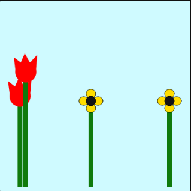
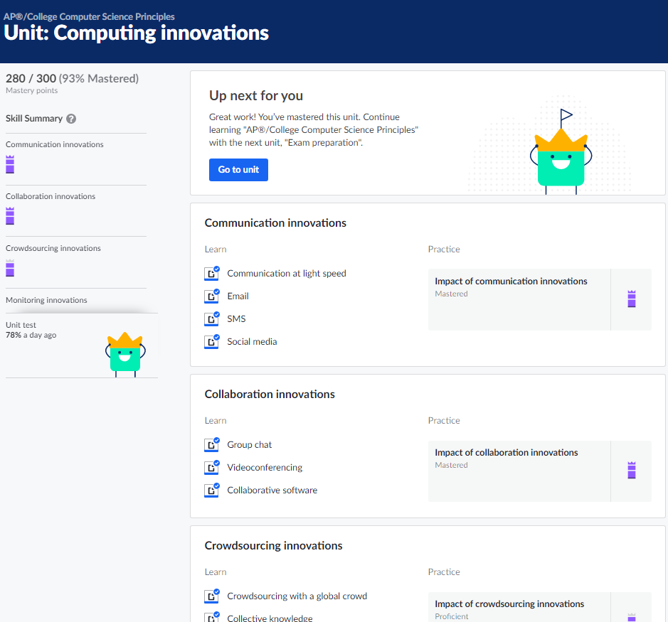

Jacob Aydin's Portfolio
Welcome to my portfolio. You can learn about me, find the projects
that I have completed, and find my contact information.
Hello I am Jacob, I am Grade 12 student at A.Y.Jackson High School, I am originally from Turkey but I am living in Canada
for the last 3 years.
I found my passion for proggraming 1 year ago and since then I am trying to develop myself about
proggraming. It's been an exciting journey for me, and below
you can find some modules and projects that I have completed
for the last 6 months.
This module allows students to learn the basic concepts of Javascript language. Javascript language is a widely used coding language that a coder must learn. So the Khan Academy teaches the basics of Javascript very well. The course helps people to expand their thinking about Javascript and practice how to use the information that they have been learned. The most significant part of the module for me was the functions, logic of statements, objects and object-oriented design. In my opinion, these topics are the most important basics of Javascript because you develop your knowledge on top of these topics.
This module allows students to learn the basic concepts of Html and CSS coding languages. Html and CSS are two key things to create a valuable website that every coder has to know. Khan academy mentions very well the important topics of these languages. These beneficial lessons help students to dive into the coding world. For me, the most significant part of the module was the CSS text properties and CSS selectors. The two lessons are the most used topics while coding a website and learning these lessons is needed if you want to create a useful website.
This module allows students to learn advanced topics of Javascript. Khan academy uses games to visualize the concepts they teach and they made it is easy for students to see and learn the concepts visually. Their creative codes make students think creatively about concepts of Javascript language. For me, this module was the key to start thinking about how to code things I see in real life. For example, I started to think about how to code a moving car when I saw a car on the street. And the most significant topic of this module was the buttons.
This module allows students to learn the combination of Javascript language and physics of the real world. This course helps you to understand the concepts of physics while teaching coding. So this module is beneficial for both topics (coding and understanding physics). And for me, this was the most significant module among the other modules because in my opinion there are many valuable lessons in this module. For example, vector motion, two-dimensional noise, modelling gravity and friction etc. And also using these concepts makes me happy because I like physics and using the theories while coding is a wonderful thing for me.

This module allows students to learn how to think basically about programming. The main idea of the course is not to teach coding but to help students to understand more about why these codes work and how to work with the codes. The courses teach math concepts of coding and the logic of coding. And every program requires some type of math concept, so learning the math concepts is mandatory for coders. For me learning the math concepts was the most significant content, It helped to apply my math knowledge on coding programs and with that ability I started to create more valuable programs.
This module allows students to think creatively and deeply about aspects of computer science. It helps students to learn how to work with actual coding and to work with a group to solve issues together. It teaches the importance of having a partner to work with and combine experiences to produce one actual product. For me, the most significant part of the module was teaching others what we have coded because I experienced that I have to learn every single detail to teach someone the things I know.
This module allows students to work as a group to make a final working product. While doing this module you first have to think uniquely to come up with a solution for a world issue. And then code a program to solve the issue. So this is a wonderful module to combine everything you learned and create a program as a team. For me, the most significant part of the project was to come up with a solution and code it. Even though I struggled to work as a team at first, we were able to overcome the difficulties in the end.
These modules allow students to cover the internet and innovations part of computer science. It demonstrates many important subjects in these modules. These modules are great for general knowledge of computer science and the main idea of the course is to teach computer science principles. The pieces of information that they provide are valuable and good to know but you don't use the things you learned very often. So for me, this module was not effective and I don't think it is mandatory to learn these concepts. But if I would have to choose the most valuable topic in these courses, I would choose communication innovations because it is more useful to know compared to other lessons.
These modules allow students to cover a wide assortment of standards in software engineering including computerized data web programming calculations data investigation specifications online information security and registering developments as this is a prologue to these post auxiliary level software engineering standards, I can proceed with my learning by going to software engineering courses in my post optional training to dive deeper into these high-level ideas that can be applied in the business the main piece of this module for me was finding out with regards to calculations as a a significant device in programming can be utilized to further develop productivity and usefulness, all things considered.
This module allows students to join information from HTML CSS js and permits understudies to have the option to make intelligent site pages with the assistance of javascript dom programming interface library. The understudies are shown how to utilize the dom programming interface to get to components on the site page. Making changes cause the site page to respond to client components and vivify portions of the site page. Although utilizing dom API is a superb prologue to making intuitive website pages pushing ahead understudies might need to keep on learning by figuring out how to utilize JQuerry instead as functioning with is a little quicker the main piece of this module for me was the prologue to utilizing javascript libraries takes into consideration more productivity while web creating and I depended on them vigorously in coding meeting noted down beneath.